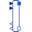
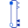

ResonanceCircuitsResonance circuits: example to demonstrate generation of FMUs (Functional Mock-up Units) |
|
Diagram
{kind=link}
Information
This information is part of the Modelica Standard Library maintained by the Modelica Association.
This example demonstrates how to couple the components of a parallel resonance circuit (upper part) and a series resonance circuit (lower part) not directly but using adaptors between physical connectors and input/output signals. Taking into account which derivatives are required, these components can be exported as input/output blocks (e.g. in form of an FMU - Functional Mock-up Unit). Connecting these input/output blocks should give the same results as connecting the physical components directly.
Bear in mind that separating physical components and connecting them via adaptor signals requires to place appropriate ground components to define electric potential within the subcircuits.
Parameters (5)
| C |
Value: 0.01 Type: Capacitance (F) Description: Capacitance |
|---|---|
| L |
Value: 0.01 Type: Inductance (H) Description: Inductance |
| fRes |
Value: 1 / (2 * pi * sqrt(L * C)) Type: Frequency (Hz) Description: Source frequency |
| res |
Value: 1 Type: Real Description: f/fResonanace |
| f |
Value: res * fRes Type: Frequency (Hz) Description: Source frequency |
Components (28)
| current1 |
Type: SineCurrent |
|
|---|---|---|
| ground1 |
Type: Ground |
|
| inductor1 |
Type: Inductor |
|
| conductor1 |
Type: Conductor |
|
| capacitor1 |
Type: Capacitor |
|
| voltage2 |
Type: SineVoltage |
|
| ground2 |
Type: Ground |
|
| inductor2 |
Type: Inductor |
|
| resistor2 |
Type: Resistor |
|
| capacitor2 |
Type: Capacitor |
|
|  | voltageToCurrentAdaptor1a | |
|  | currentToVoltageAdaptor1a | |
| ground1a |
Type: Ground |
|
| currentToVoltageAdaptor1b | ||
| voltageToCurrentAdaptor1b | ||
| ground1b |
Type: Ground |
|
| voltageToCurrentAdaptor1c | ||
| currentToVoltageAdaptor1c | ||
| ground1c |
Type: Ground |
|
| currentToVoltageAdaptor2a | ||
| voltageToCurrentAdaptor2a | ||
| ground2a |
Type: Ground |
|
| voltageToCurrentAdaptor2b | ||
| currentToVoltageAdaptor2b | ||
| ground2b |
Type: Ground |
|
| currentToVoltageAdaptor2c | ||
| voltageToCurrentAdaptor2c | ||
| ground2c |
Type: Ground |